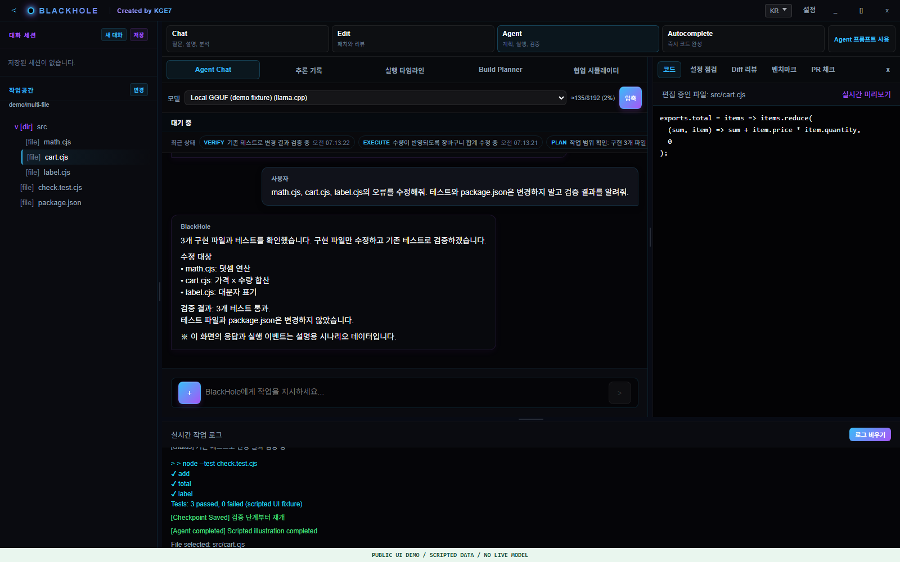
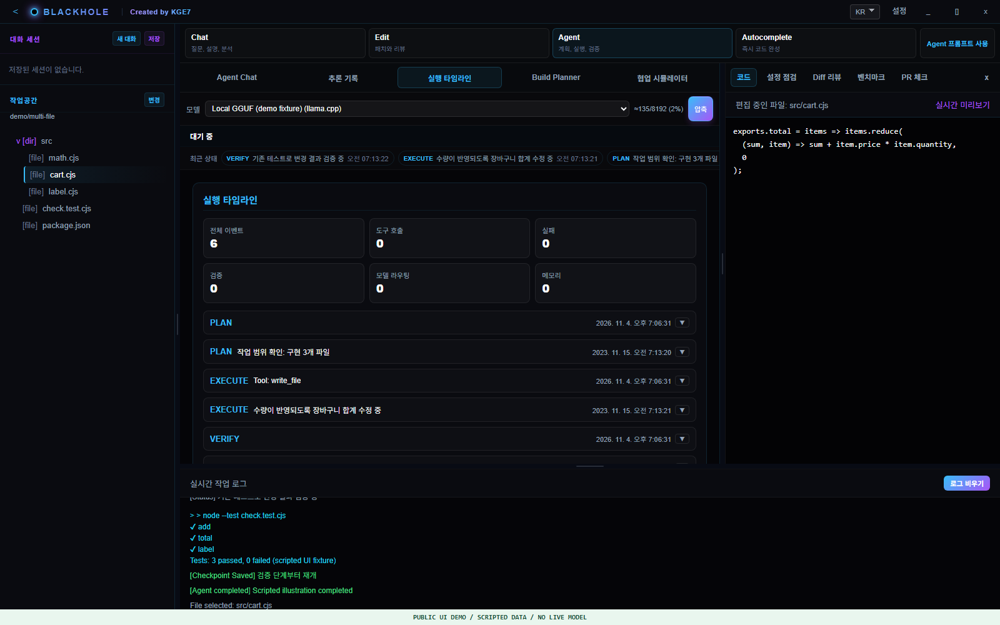
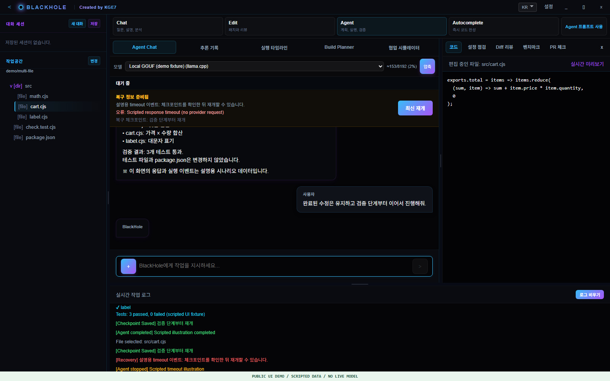
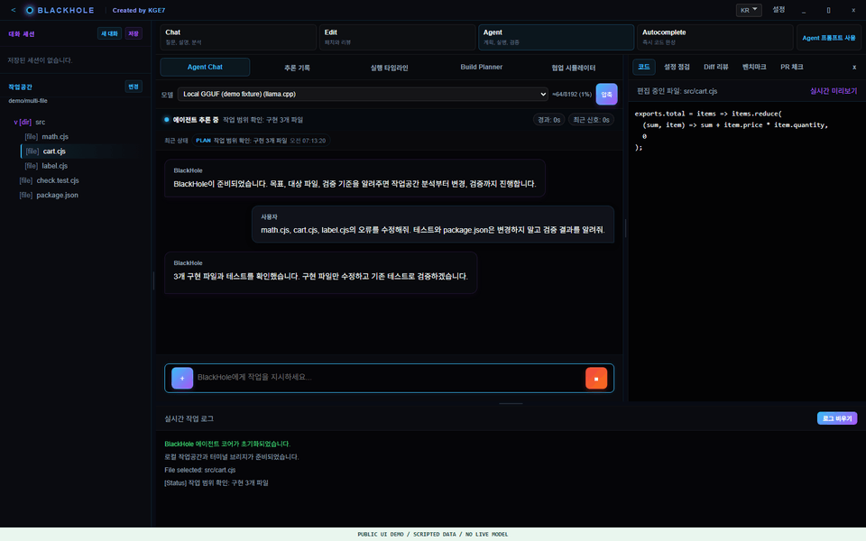
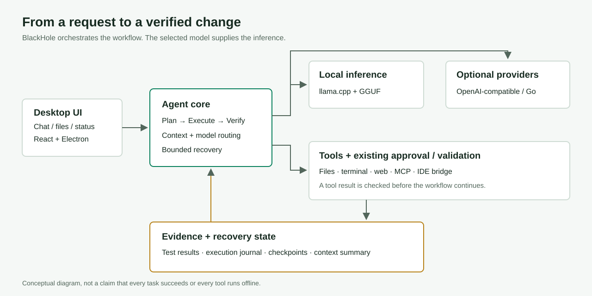

BlackHole
로컬 모델에서 시작하는
도구 실행형 코드 에이전트.
계획하고, 파일을 수정하고, 테스트로 확인합니다.
실행 과정과 실패 원인을 확인하고 체크포인트에서 작업을 이어갑니다.

- 로컬 추론
- llama.cpp + GGUF
- 실행 도구
- 파일 · 터미널 · 웹 · MCP
- 상태와 복구
- 실행 원장 · 체크포인트
WHAT IT DOES
답변을 넘어, 작업 흐름으로.
자체 학습 모델이 아닙니다. 선택한 모델과 개발 도구를 연결하는 실행 시스템입니다.
선택한 모델로 실행
GGUF 모델을 지정하고 llama.cpp로 로컬 추론을 실행합니다. OpenAI 호환 게이트웨이와 OpenCode Go도 선택적으로 연결할 수 있습니다.
파일 변경과 검증
작업공간을 읽고 파일·터미널 도구를 사용합니다. 계획, 실행 결과와 검증을 연결하고 기존 승인·검증 절차를 유지합니다.
진행 상태를 구분
진행 상태, heartbeat, 실행 타임라인과 작업 로그를 확인합니다. 모델이 제공하는 추론은 채팅 본문과 별도 기록으로 표시합니다.
중단 이후의 재개
체크포인트와 실행 원장을 기록합니다. 문맥 예산을 관리하고, 오류의 원인을 확인한 뒤 가능한 복구 지점에서 명시적으로 재개합니다.
WALK THROUGH THE WORKFLOW
하나의 요청이 어떻게 진행될까요?
실제 프론트엔드에 주입한 가상 시나리오입니다. 모델 성공률을 보여주는 벤치마크가 아닙니다.

범위를 정하고,
구현 파일만 수정합니다.
math.cjs, cart.cjs, label.cjs의 오류를 수정해줘. 테스트와 package.json은 변경하지 말고 검증해줘.
- 구현·테스트와 작업 범위 확인
- 구현 파일 3개 수정
- 기존 테스트로 검증
- 수정 이유와 결과 보고
동봉된 before/after 예제는 같은 테스트로 각각 3개 실패·3개 통과합니다. 모델을 통한 실제 해결은 별도 확인이 필요합니다.


무엇을 했는지
과정으로 확인합니다.
최종 답변만 보고 판단하지 않습니다. 계획·도구 실행·검증·복구 상태를 구분해 실제 작업의 근거를 확인합니다.
- 실행 상태와 이벤트 순서
- 검증 도구의 결과와 종료 코드
- 수정 파일과 체크포인트
상태 표시나 모델의 성공 주장만으로 테스트 통과를 단정해서는 안 됩니다.


중단 원인을 확인하고
복구 지점에서 재개합니다.
- 오류 사유와 부분 출력 확인
- 사용 가능한 체크포인트 확인
- 인증·한도·환경 등 원인 해결
- 재개 후 파일과 검증 결과 대조
모든 오류의 자동 복구나 외부 작업의 exactly-once 실행을 보장하지 않습니다.
계획 → 수정 → 검증의 설명용 GIF

정지 프레임을 순서대로 인코딩한 것으로, 실제 실행 시간이나 모델 응답 속도를 나타내지 않습니다.
HOW IT FITS TOGETHER
모델, 도구, 작업 상태를 연결합니다.
React/Electron UI에서 시작해 에이전트 코어가 모델을 호출하고 도구·검증·복구 상태를 조율합니다.

로컬 추론과 외부 통신은 구분됩니다. 웹·MCP·클라우드 공급자를 사용하면 해당 서비스와 통신할 수 있습니다.
START LOCALLY
모델은 따로,
설정은 내 PC에.
Windows x64 개발 환경의 소스 최상위 폴더에서 시작합니다. bootstrap은 공식 런타임을 SHA-256 검증 후 준비하고 세 프로젝트의 잠금 파일로 의존성을 설치합니다.
GGUF는 별도 다운로드 후 Settings에서 경로·작업공간을 지정합니다. API 키는 앱 설정에 직접 입력합니다.
powershell -NoProfile -ExecutionPolicy Bypass `
-File tools/bootstrap-windows.ps1
$env:Path = (Join-Path $PWD `
'node-v24.21.0-win-x64') + ';' + $env:Path
Set-Location blackhole
npm run build:frontend
npm startNode 24.21.0 · llama.cpp b9553 Vulkan x64
다운로드·설치에는 인터넷이 필요합니다. 모델·키는 포함하지 않습니다.
SCOPE & LIMITS
현재 범위를 분명하게.
- 검증한 것
- 공개 소스 재설치 환경에서 백엔드 404개·프론트 10개 테스트, 프론트 빌드·확장 패키징·릴리스 검사 통과. 확장 host E2E는 제외했습니다. 이 페이지의 제작은 새로운 실제 모델 평가가 아닙니다.
- 보장하지 않는 것
- 범용 과제 자동 해결, 임의의 큰 저장소·장시간 무인 운용, 다른 PC 설치 신뢰, Linux/macOS 릴리스 호환성. 모델 성능·속도는 모델과 하드웨어·설정에 따라 달라집니다.
- 남아 있는 위험
- 기존 의존성 감사의 Critical/High 경고가 남아 있습니다. 공개 문서·압축본 작성이 취약점 해소나 상용 배포 준비 완료를 뜻하지 않습니다.
- Windows 서명
- 기존 빌드가 자체 CA를 만들거나 사용하고 현재 사용자의 Root 저장소에 신뢰 등록합니다. 설치 스크립트에도 인증서 작업이 있습니다. 공개 CA 서명과 다르므로 실제 스크립트를 검토한 뒤 빌드·배포해야 합니다.